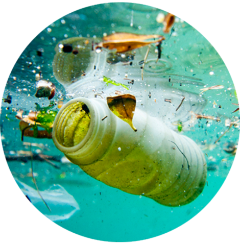
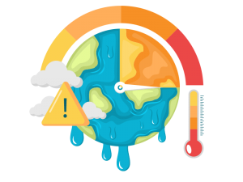
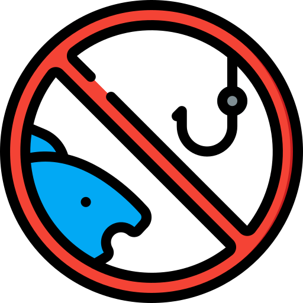
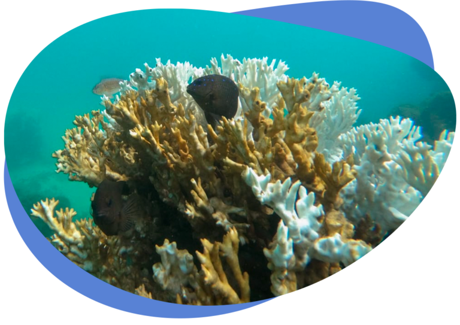
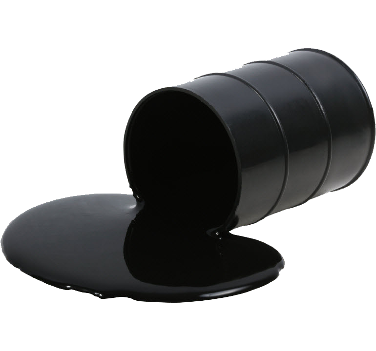

<!DOCTYPE html>

<html>

    <head>
        <title>Segundo Ano</title>
        <link rel="stylesheet" href="styles.css">
    </head>
</html>
<body>
    =<STYLE TYPE="text/css">
        BODY {background-image: url(1091513.jpg); }
    </STYLE>

</body>
<h1>
    Preservação da Vida Marinha: Nossa Responsabilidade para um Futuro Sustentável
</h1>
<h2>
    Os oceanos são o coração do nosso planeta, abrigando uma biodiversidade rica e variada que sustenta a vida em todo o globo. As maravilhas do mundo marinho são incontáveis, desde as majestosas baleias até os menores organismos microscópicos que desempenham papéis vitais nos ecossistemas. No entanto, a vida marinha enfrenta ameaças cada vez maiores devido às atividades humanas irresponsáveis.

    A preservação da vida marinha é uma tarefa urgente e essencial para garantir a sustentabilidade do nosso planeta e a sobrevivência das gerações futuras. Para alcançar esse objetivo, é necessário um esforço conjunto que abranja tanto os governos quanto a sociedade civil. Vamos explorar algumas das principais questões que afetam a vida marinha e as medidas que podemos tomar para protegê-la:
    


  <p>  1. Poluição dos Oceanos: Milhões de toneladas de plástico, produtos químicos, esgoto e outros detritos são despejados nos oceanos todos os anos. Isso causa danos devastadores à vida marinha, que muitas vezes ingere acidentalmente esses resíduos ou fica presa neles. A redução do uso de plásticos descartáveis, a reciclagem adequada e a implementação de leis rigorosas sobre o descarte de resíduos industriais são medidas cruciais para combater essa ameaça.</p>
    
  

  <p>  2. Mudanças Climáticas: O aumento das temperaturas globais e a acidificação dos oceanos têm impactos profundos nos ecossistemas marinhos. Corais estão branqueando, peixes estão migrando para águas mais frias e a disponibilidade de alimentos está sendo afetada. Reduzir as emissões de gases de efeito estufa e adotar práticas sustentáveis em todos os setores econômicos são fundamentais para mitigar esses efeitos.</p>
     

   <p> 3. Pesca Predatória: A pesca excessiva e predatória esgota as populações de peixes, ameaçando a segurança alimentar de milhões de pessoas que dependem do oceano para sobreviver. A implementação de medidas de manejo sustentável, como cotas de pesca, áreas protegidas e uso de práticas de pesca seletiva, é essencial para garantir a renovação das espécies e manter o equilíbrio dos ecossistemas marinhos.</p>
   

<p>4. Destruição de Habitats Costeiros: Manguezais, recifes de coral e estuários são habitats cruciais para uma variedade de espécies marinhas. No entanto, essas áreas estão sendo ameaçadas pela urbanização descontrolada, exploração de recursos e atividades industriais. A proteção dessas regiões é fundamental para garantir a sobrevivência de muitas espécies e a manutenção dos ecossistemas costeiros.</p>



    <p>5. Acidentes Ambientais: Derramamentos de óleo e outros acidentes ambientais têm consequências devastadoras para a vida marinha, causando danos que podem levar anos, ou até mesmo décadas, para serem reparados. Investir em tecnologias mais seguras e rigorosos protocolos de segurança é imperativo para minimizar esses riscos.</p>
    

</h2>